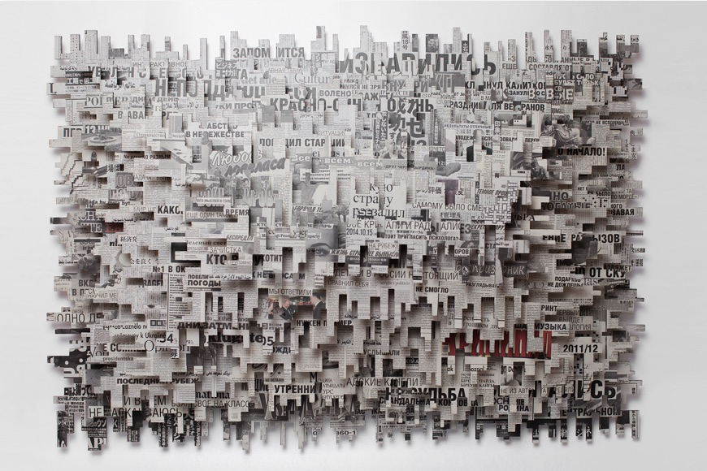
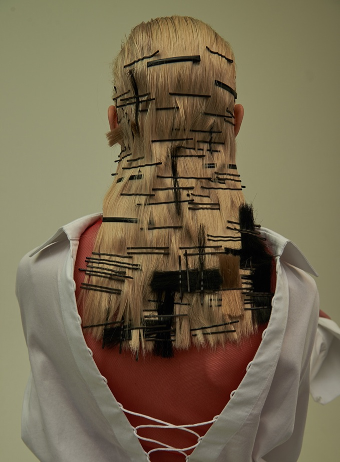
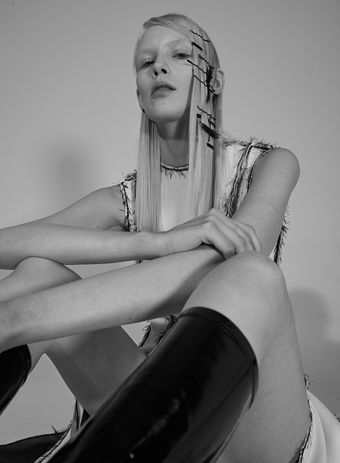
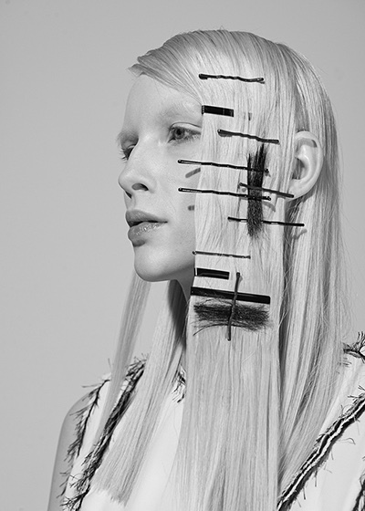
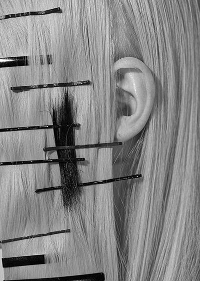
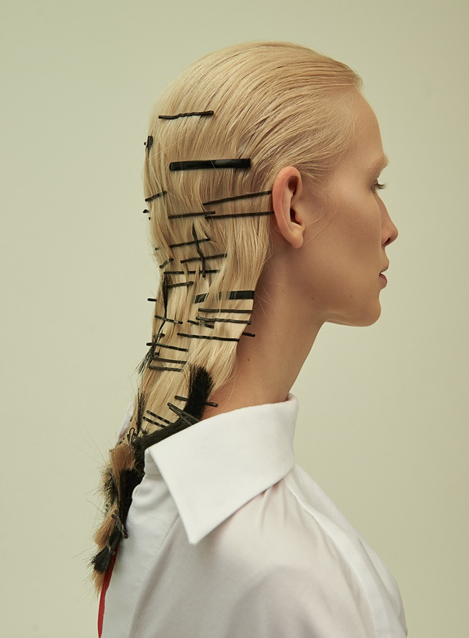

Съемка
НА ГРАНИ ИСКУССТВА

Павел Киселёв.
«Новое Сообщение: Свидетель»
2016, смешанная техника.
«Новое сообщение: Свидетель» - это газетная подборка, которую можно не только бесконечно читать, но и находить в ней всё новые и новые смыслы. Всё зависит от языка, которым владеет читатель и его способности видеть скрытые послания.
Автор «Новое сообщение: Свидетель» скомпилировал двухмесячные статьи, посвящённые одним и тем же событиям, таким образом, что смог поменять местами текст и стоящий за ним образ. Знакомясь, по сути, с одним и тем же текстом каждый читатель находит в нём совершенно разные и
бесконечно изменчивые
смыслы.



платье: Alisa Kuzembaeva
сапоги: Stuart Weitzman
сапоги: Stuart Weitzman

рубашка: Nebo
топ: Alisa Kuzembaeva
топ: Alisa Kuzembaeva
